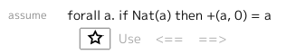

Mathematical Statements¶
Mathematical statements are at the core of Math Playground. They can be assumed, proved, or used to prove other statements.
Statements may have any number of local definitions, followed by any number of conditions, and then a conclusion. An example is given below:
forall x y : Nat.
if odd(x) and odd(y) then
odd(* x y)
In this example, the local definitions are x and y; the conditions are x : Nat, y : Nat, odd(x) and odd(y); and the conclusion is odd(* x y).
That is:
any
forallconstructions that apply to the conclusion
count as local definitions,
any type annotations,
_ : _any (curried)
if _ thenclausesany clauses within
if _ thenseparated by anand
count as conditions, and the remainder of the statement is the conclusion.
Using a Statement¶
The following buttons, that appears just below where a statement is assumed or proven, allow you to use that statement in other proofs:
- Star
The star button lets you save the statement to the left-hand pane so you can find it easier.
Starring a statement also lets you double-click on a local definition to substitute another expression for that definition.
- Use
The use button lights green if the currently selected goal matches the conclusion of the statement, and the statement is in scope.
- <== / ==>
The arrow buttons appear if the conclusion is an equality. When the currently selected expression matches the left-hand or right-hand side of the equality, an arrow appears allowing you to replace the current expresion with the other side of the equality.
- Instantiate
The instantiate button appears if the conclusion is an existential. It lights green when in scope, and allows you to use the existential.